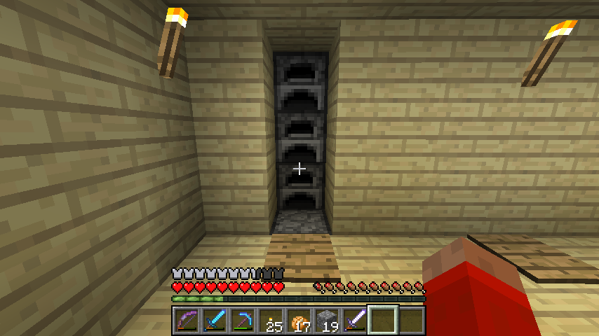

首页
上一页
201
202
203
204
205
206
206
207
208
209
210
211
下一页
末页
defanive2
无尽黑夜
14
接下来就要把信号传给后方的3个活塞
——来自 MCLive
14394楼
2013-03-29 10:27
defanive2
无尽黑夜
14
最简单的同时控制3个活塞的方法
就是利用如此的结构
不足之处在于受红石火把拖累，有1tick的延迟
不过在此无伤大雅
——来自 MCLive
14395楼
2013-03-29 10:28
defanive2
无尽黑夜
14
接下来做这样一个结构
这样的结构可以做出不对称的电路延时
OFF->ON时，红石火把立即收到充能
而在ON->OFF时，需要经过2tick才失去充能
因此就做出了不对称的延时
——来自 MCLive
14396楼
2013-03-29 10:37
defanive2
无尽黑夜
14
好吧刚刚一直把活塞的位置放错了
正确的位置应该如下
不过后面电路布置的原理都是一样的
只不过改变了一下位置而已
——来自 MCLive
14397楼
2013-03-29 10:41
defanive2
无尽黑夜
14
后面的电路可以稍作修改成这样
——来自 MCLive
14398楼
2013-03-29 10:42
defanive2
无尽黑夜
14
接下来把信号给到一个zero edge detector
其实就是双边缘检测器
每次电路信号发生改变时
无论是OFF->ON还是ON->OFF
双边缘检测器都会发出一个脉冲信号
而这个活塞式的双边缘检测器，发出的信号是1tick
正好符合我们的需要，而且延时非常小
其工作原理就是利用实体方块会切断电路的原理
——来自 MCLive
14399楼
2013-03-29 10:45
defanive2
无尽黑夜
14
接下来就可以把信号最后接到右侧的活塞了
这样也可以同时控制3个活塞，利用了BUD的效果
——来自 MCLive
14400楼
2013-03-29 10:46
defanive2
无尽黑夜
14
于是整个电路就完成了
——来自 MCLive
14401楼
2013-03-29 10:46
defanive2
无尽黑夜
14
踩上去一次，打开墙面，露出熔炉
——来自 MCLive
14402楼
2013-03-29 10:47
defanive2
无尽黑夜
14
再踩上一次，关闭墙面，隐藏熔炉
——来自 MCLive
14403楼
2013-03-29 10:48
defanive2
无尽黑夜
14
最后封闭一下就成这样了
没用外露的电路，非常美观
——来自 MCLive
14404楼
2013-03-29 10:48
defanive2
无尽黑夜
14
打开之后
——来自 MCLive
14405楼
2013-03-29 10:48
defanive2
无尽黑夜
14
而实际在我生存里面布置电路的时候
就遇到了一堆的麻烦
右侧是垃圾桶的电路
左侧遇到了刷铁机的水流运输
而上方则有地面路灯的电路
电路也进行了大修改才能放下
花费了非常多的时间在布置这个电路上
——来自 MCLive
14406楼
2013-03-29 10:51
defanive2
无尽黑夜
14
不过值得庆祝的是，最后的结果非常满意
——来自 MCLive

14407楼
2013-03-29 10:52
defanive2
无尽黑夜
14
当然，下面的dropper自然是作为燃料储存的地方
dropper显示成fuel是怎么做到的呢
其实把dropper方块放入anvil中改名即可
同理也可以运用到任何有GUI+名称的方块上
例如箱子、发射器、熔炉等等
PS 改名之后，这些方块一旦放下
再挖起来的时候名字就消失了
而每次改名需要消费LV5
所以说还是要慎重使用
——来自 MCLive
14408楼
2013-03-29 10:54
defanive2
无尽黑夜
14
至此，储存室的各种电路设施算是完美布置好了
个人对这几个工程最后的效果都非常满意
——来自 MCLive
14409楼
2013-03-29 10:57
defanive2
无尽黑夜
14
说到1.5的更新
居然忘记介绍这个了
3个雪块可以合成6块雪片了！
——来自 MCLive
14410楼
2013-03-29 11:05
defanive2
无尽黑夜
14
我们知道，用铲子铲1个雪片可以得到1个雪球
而4个雪球可以合成一个雪块
因此通过雪块合成雪片，我们浪费了一半的雪
——来自 MCLive
14411楼
2013-03-29 11:08
defanive2
无尽黑夜
14
右键在地上放下雪片之后
继续对着雪片右键放雪片可以堆叠起来
一个雪片是1/8的高度
——来自 MCLive
14413楼
2013-03-29 11:10
defanive2
无尽黑夜
14
但是值得注意的是，最上层的雪片并不占高度
图中可以看到虽然我们站在1/8的雪块上
但是我们的y值仍然是4
再例如，5个雪片合成的5/8雪块
实际上只有4/8个雪块的高度
——来自 MCLive
14414楼
2013-03-29 11:11
defanive2
无尽黑夜
14
也就是说，由8个雪片堆叠起来的8/8雪块
实际上只有7/8的高度
而一个由4个雪球合成的雪块，则是占1格的高度
因此虽然这2种方块看起来毫无差别
但是实际上还是有高度差异的
——来自 MCLive
14415楼
2013-03-29 11:14
defanive2
无尽黑夜
14
如图拿着红石粉对着玻璃右键
就可以在8/8雪块上放红石粉
——来自 MCLive
14416楼
2013-03-29 11:16
defanive2
无尽黑夜
14
由于8/8雪块并不是实体方块
因此有着和倒置的半砖、萤石等类似的红石性质
也就是可以向上传输信号，但是无法下传信号
考虑到8/8雪块无法浮空放置等问题
实际上还是倒置的半砖在这方面比较有实用性
——来自 MCLive
14417楼
2013-03-29 11:18
defanive2
无尽黑夜
14
最近才发现了optifine有一个connected textures的选项
可以把一些方块的材质拼合在一起
例如玻璃就可以做成这样
看起来非常漂亮
——来自 MCLive
14418楼
2013-03-29 11:23
defanive2
无尽黑夜
14
玻璃片也可以连接在一起
——来自 MCLive
14419楼
2013-03-29 11:24
defanive2
无尽黑夜
14
好吧，今天暂时玩到这里了
睡觉去
——来自 MCLive
14420楼
2013-03-29 11:25
defanive2
无尽黑夜
14
今天继续打MC吧！
经过几天对储存室的修改，总算是差不多完工了
那么今天就要开工做下一个大工程了
村民计划！
——来自 MCLive
14446楼
2013-03-30 05:52
defanive2
无尽黑夜
14
一直以来都有开做这个计划的想法
不过鉴于各种工程，一直被推后了
前几个星期看到panda4994在U2B上的生存视频
最后决定必须要开工了！
造6组鹅卵石半阶
——来自 MCLive
14447楼
2013-03-30 05:55
defanive2
无尽黑夜
14
不过出发前先去END附魔6把铲子用
——来自 MCLive
14448楼
2013-03-30 05:59
defanive2
无尽黑夜
14
其实村民计划的目的很简单，就是为了交易
注意到，钻石，萤石，红石等物品是不可再生的
也就是说，如果不继续探索地图
那么有朝一日全部的钻石就会用光
而村民交易则是可以再生的
因此村民计划也就是利用交易系统把各种钻石制具变为可再生
——来自 MCLive
14449楼
2013-03-30 06:02
首页
上一页
201
202
203
204
205
206
206
207
208
209
210
211
下一页
末页